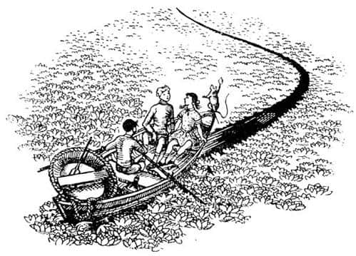
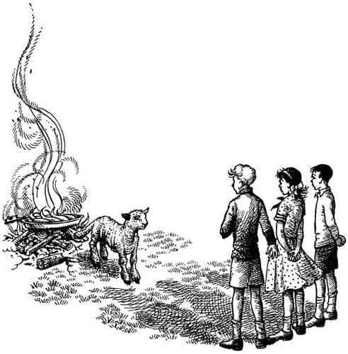

Dünyanın En Sonu
Drinian ve iki Pevensie hariç Deniz İnsanlarını fark eden tek kişi Bastıbacak’tı. Deniz Kralı’nın mızrağını salladığını görünce hemen suya dalmıştı, çünkü bunu bir tehdit ya da meydan okuma olarak algılamış ve sorunu hemen orada, o anda çözümlemeyi istemişti. Ancak suyun tatlı olduğunu keşfetmenin heyecanı dikkatini dağıtmıştı ve Deniz İnsanları tekrar aklına gelmeden önce, Lucy ve Drinian, onu kenara çekip gördüklerini anlatmaması konusunda uyarmıştı.
Buna zahmet etmelerine gerek olmadığı anlaşıldı, çünkü artık Şafak Yıldızı kimse yaşamıyormuş gibi görünen bölgelerin üzerinde kayarak ilerliyordu. Lucy’den başka hiç kimse Deniz İnsanlarını bir daha görmedi, hem o bile sadece çok kısa bir an için görmüştü. Ertesi gün tüm sabah oldukça sığ sularda yolculuk yaptılar, dip yosunluktu. Öğleden az önce Lucy yosunlarla beslenen bir balık sürüsü gördü. Hepsi sürekli yiyor ve aynı yöne doğru ilerliyordu. “Tıpkı koyun sürüsü gibi” diye düşündü Lucy. Aniden sürünün ortalarında kendi yaşlarında bir denizkızı gördü, elinde çoban asasına benzeyen bir sopa taşıyan sakin, yalnız bir kızdı. Lucy bu kızın bir çoban – belki de bir balık çobanı – olduğuna emindi, çayırdaki sürüsü de balıklardan oluşuyordu. Balıklar ve kız suyun yüzüne oldukça yakındı. Sığ sularda kayarak ilerleyen kız ve küpeşteden eğilen Lucy karşı karşıya geldiklerinde kız yukarıya, dosdoğru Lucy’nin yüzüne baktı. Birbirleriyle konuşamadılar, az sonra denizkızı geminin gerisinde kalmıştı. Lucy kızın yüzünü asla unutmadı. O diğer Deniz İnsanları gibi korkmuş ya da kızmış görünmüyordu. Lucy o kızı sevmişti, kızın da onu sevdiğinden emindi. O kısacık anda, bir şekilde arkadaş olmuşlardı. Orada veya başka herhangi bir dünyada yeniden karşılaşma şansları yoktu. Fakat karşılaşsalar, kollarını açıp birbirlerine koşarlardı.
Bundan sonraki günler boyunca Şafak Yıldızı yelkenleri rüzgârsız, sakin bir denizin üzerinde zarifçe kayarak doğuya doğru ilerledi. Geçen her an ışık gittikçe parlaklaşıyordu ama bundan rahatsızlık duymuyorlardı. Kimse bir şey yemedi ya da uyumadı, hatta bunları yapmayı istemedi bile. Denizden, şaraptan güçlü ve – nasıl olduğu bilinmez ama – normal sudan daha ıslak, daha akışkan olan bu göz kamaştırıcı sudan kovalarca çekip kana kana içerken, bir yandan da sessizce sohbet ettiler. Yolculuğa başladıklarında yaşlıca olan gemicilerden bir-ikisi gün geçtikçe gençleşmeye başladı. Gemideki herkes neşe ve heyecanla doluydu, ama bu heyecan insanı durmadan konuşturan türden değildi. İlerledikçe daha az konuşuyorlardı ve konuştukları zaman da neredeyse fısıldaşıyorlardı. Denizin sakinliği onları etkisi altına almıştı.
“Lordum” dedi Caspian, Drinian’a bir gün, “ileride ne görüyorsun?”
“Efendim” dedi Drinian, “beyazlık görüyorum. Gözlerimin görebildiği kadarıyla ufuk boyunca, kuzeyden güneye kadar.”
“Ben de aynı şeyi görüyorum” dedi Caspian, “ve ne olduğunu hayal bile edemiyorum.”
“Eğer kuzeyde olsaydık” dedi Drinian, “buz olduğunu söylerdim. Ancak burada buz olamaz. Adamları küreklere gönderip, akıntıya karşı koymaya çalışsak iyi olur. O şey ne olursa olsun, bu hızla ona çarpmak istemeyiz!”
Drinian’ın dediğini yaptılar ve giderek yavaşladılar. Beyazlık esrarengizliğinden bir şey kaybetmedi. Orası kara idiyse bile, çok tuhaf bir kara parçası olmalıydı, çünkü suyla aynı seviyede olan kısımları su kadar pürüzsüzdü. Yaklaştıklarında Drinian dümeni sonuna kadar kırdı ve Şafak Yıldızı’nı güneye döndürdü, akıntıyı yandan alarak beyazlığın kenarında, güneye doğru biraz kürek çektiler. Böyle yapmakla önemli bir keşifte bulunmuşlardı: Akıntı yaklaşık on beş metrelik bir alanda etkiliydi ve kalan kısım bir havuz kadar durgundu. Bu, Ramandu’nun ülkesine dönüş yolculuğunda tüm yolu kürek çekerek gitmenin oldukça kötü olacağını düşünmeye başlayan tayfalar için çok iyi bir haberdi. (Bu aynı zamanda denizkızının neden o kadar çabuk geride kaldığını açıklıyordu. Kız akıntının içinde değildi. Eğer akıntının içinde olsaydı gemiyle aynı hızda doğuya doğru gidiyor olacaktı.)
Kimse beyaz şeyin ne olduğunu anlamış değildi. Sonra kayık denize indirildi ve araştırmaya gönderildi. Şafak Yıldızı’nda kalanlar kayığın beyazlığın ortasına girdiğini görebiliyor, kayıktakilerin tiz ve şaşkın seslerini (durgun suların üzerinden net bir şekilde) duyabiliyorlardı. Kayığın başındaki Rynelf derinlik ölçerken bir sessizlik oldu; kürek çekerek geriye dönerken kayığın içi o beyaz şeylerle dolmuştu. Herkes olan biteni öğrenmek için küpeşteye koştu.
“Nilüfer, Majesteleri!” diye bağırdı Rynelf başta dikilerek.
“Ne dedin?” diye sordu Caspian.
“Nilüferler, Majesteleri” dedi Rynelf. “Tıpkı göller ya da bahçelerdekiler gibi.”
“Bakın!” dedi geminin kıçında olan Lucy. Beyaz taç yapraklar ve geniş, yassı yapraklarla dolu ıslak kollarını kaldırmıştı.
“Derinlik nedir, Rynelf?” diye sordu Caspian.
“Garip olan da bu, Majesteleri” dedi Rynelf. “Hâlâ derin. Nereden baksanız üç buçuk fersah.”
“Gerçek nilüfer olamaz, bizim nilüfer dediğimiz şey olamazlar” dedi Eustace.
Muhtemelen değildiler, ama çok benziyorlardı. Bir süre konuştuktan sonra Şafak Yıldızı akıntıya geri döndü ve Nilüfer Gölü’nde ya da Gümüş Göl’de (iki ismi de denediler ve Gümüş Göl tuttu; şimdi Caspian’ın haritasında çizilidir) doğuya doğru ilerlemeye devam ettiler. Yolculuklarının en tuhaf bölümü başlamış oldu. Terk etmekte oldukları açık deniz, az sonra batı ufkunda ince, mavi bir çizgi haline gelmişti. Geçerken nilüferleri iterek açtıkları, yeşil bir cam gibi parlayan şerit hariç, üzerine belirsiz bir altın rengi serpiştirilmiş beyazlık etraflarını her yönde sarmalıyordu. Düşünüldüğünde, bu son deniz, kutuplara çok benziyordu; gözleri kartallarınki kadar keskinleşmiş olmasaydı, tüm bu beyazlıkta – özellikle sabahın erken saatlerinde – güneş dayanılmaz olurdu. Aynı beyazlık, her akşam aydınlığın daha uzun sürmesine neden oluyordu. Nilüferli alan sona ermeyecekmiş gibi görünüyordu. Günbegün, o millerce ve fersahlarca uzanan çiçeklerden Lucy’nin tanımlayamadığı bir koku yükseliyordu; tatlı, evet, ama uykunuzu getirmeyen ya da bayıltıcı olmayan, beyninize işleyen ve dağlara koşarak tırmanabileceğinizi ya da bir fille güreşebileceğinizi hissettiren taze, yabani ve eşsiz bir kokuydu. Lucy ve Caspian birbirlerine, “Buna daha fazla dayanamayacağımı hissediyorum, ama bitmesini de istemiyorum” dediler.
Sık sık derinliği ölçüyorlardı ama su ancak günler sonra sığlaştı ve sonra da sığlaşmaya devam etti. Bir gün geldi ki, akıntıdan çıkmaları ve kürek çekerek salyangoz hızıyla yollarına devam etmeleri gerekti. Şafak Yıldızı’nın daha fazla doğuya gidemeyeceği apaçık ortadaydı. Aslında akıllıca davrandıkları için onun karaya oturmasını engellediler.
“Kayığı indirin” diye bağırdı Caspian, “sonra da adamları arkaya çağırın. Onlarla konuşmam gerekiyor.”
“Ne yapacak?” diye fısıldadı Eustace, Edmund’a. “Gözlerinde garip bir bakış var.”
“Sanırım hepimiz aynı şekilde görünüyoruz” dedi Edmund.
Geminin kıçında Caspian’a katıldılar ve çok geçmeden tüm adamlar kralın konuşmasını duymak için merdivenlerin dibine üşüştüler.
“Arkadaşlar” dedi Caspian, “başladığımız araştırmanın şartlarını artık yerine getirdik. Yedi lordun hepsini bulduk ve Sör Bastıbacak asla geri dönmemeye yemin ettiğinden Ramandu’nun ülkesine ulaştığımızda Lord Revilian, Argoz ve Mavramorn’u uyanmış bulacağız. Lord Drinian, gidebileceğiniz kadar hızla Narnia’ya dönmenizi ve Ölümsuyu Adası’nda karaya çıkmamanızı emrederek gemiyi size emanet ediyorum. Vekilim Cüce Yaygaracı’ya tüm bu gemideki arkadaşlarıma vaat ettiğim ödülleri vermesini söyle. Bunu fazlasıyla hak ettiler. Eğer dönmezsem, vekil, Cornelius, Porsuk Mantarsever ve Lord Drinian Narnia’ya bir kral seçsin ve…”
“Fakat efendim” diye sözünü kesti Drinian, “tahtı bırakıyor musunuz?”
“Bastıbacak’la Dünyanın Sonu’nu görmeye gideceğim” dedi Caspian.
Denizciler arasında mırıltılar duyuldu.
“Kayığı biz alacağız” dedi Caspian. “Bu sakin sularda ona ihtiyacınız olmayacak, Ramandu’nun adasında yeni bir kayık inşa edersiniz. Şimdi…”
“Caspian” dedi Edmund aniden sertçe, “bunu yapamazsın.”
“Evet kesinlikle” dedi Bastıbacak, “Majesteleri bunu yapamaz.”
“Hayır, gerçekten” dedi Drinian.
“Yapamaz mıyım?” dedi Caspian şiddetle, bir an için amcası Miraz gibi görünerek.
“Majestelerinden özür diliyorum” dedi Rynelf güverteden, “ama içimizden biri yapsa, bunun adı kaçmak olur.”
“Uzun süredir hizmetimde olmana çok güveniyorsun Rynelf” dedi Caspian.
“Hayır efendim! Tamamıyla haklı” dedi Drinian.
“Aslan’ın yelesi adına” dedi Caspian, “öğretmenim değil, kullarım olduğunuzu sanıyordum.”
“Ben değilim” dedi Edmund, “ve ben bunu yapamayacağını söylüyorum.”
“Yapamaz mıyım?” dedi Caspian. “Ne demek istiyorsun?”
“Majestelerinin hoşuna gidecekse, yapmamalısınız deriz” dedi Bastıbacak yerlere kadar eğilerek. “Siz Narnia kralısınız. Geri dönmezseniz tüm kullarınızın ve özellikle Yaygaracı’nın güvenini sarsarsınız. Sorumsuz biri gibi kendinizi maceralara atamazsınız. Majesteleri aklın sesini dinlemeyecekse, benim için en büyük sadakat, gemideki diğer adamların da yardımıyla, silahlarınızı elinizden almak, aklınız başınıza gelinceye kadar sizi gemide eliniz kolunuz bağlı tutmak olurdu.”
“Tamamıyla doğru” dedi Edmund. “Odysseus deniz perilerinin yanına gitmek istediğinde ona yaptıkları gibi.”
Lucy, “Ramandu’nun kızına geri döneceğine söz verdin” dediğinde Caspian’ın eli kılıcının kabzasına gitmişti. Caspian durakladı. “Şey… evet. Bu da var” dedi. Bir an kararsız kaldı ve sonra gemideki herkese bağırdı.
“Eh, dediğiniz olsun. Arayış bitti. Hepimiz dönüyoruz. Kayığı yukarı çekin.”
“Efendim” dedi Bastıbacak, “hepimiz dönmüyoruz. Ben, daha önce de açıkladığım gibi—”
“Susun!” diye gürledi Caspian. “Bana dersimi verdiniz, ama tuzağa düşmem. Şu fareyi susturacak biri yok mu?”
“Majesteleri Narnia’nın konuşan hayvanlarına iyi davranacağına söz vermişti” dedi Bastıbacak.
“Konuşan hayvanlara, evet” dedi Caspian. “Konuşmadan duramayan hayvanlar hakkında bir şey söylemedim.” Öfkeyle merdiveni savurdu ve kapısını çarparak kamarasına girdi.
Biraz sonra diğerleri yanına gittiklerinde onu sakinleşmiş buldular; yüzü bembeyazdı ve gözlerinde yaşlar vardı.
“Yararı yok” dedi. “Öfkem ve gururumla zarar vermektense terbiyeli davranabilirdim. Aslan benimle konuştu. Hayır, buraya geldiğini söylemiyorum. Öncelikle, bu kamaraya sığmazdı. Fakat duvardaki şu altın aslan başı canlandı ve benimle konuştu. Korkunçtu – gözleri. Bana kaba davrandığından değil, başlangıçta biraz sertti ama. Fakat yine de kötüydü. Dedi ki – dedi ki – ah, dayanamıyorum. Söyleyebileceği en kötü şeydi. Sizin devam etmeniz gerekiyor – Bastıbacak, Edmund, Lucy ve Eustace; ben dönmeliymişim. Yalnız başıma. Hem de hemen. Bu olanların ne yararı var ki?”
“Caspian, canım” dedi Lucy. “Eninde sonunda kendi dünyamıza dönmemiz gerektiğini biliyordun.”
“Evet” dedi Caspian hıçkırarak, “ama daha çok erken.”
“Ramandu’nun adasına vardığında kendini daha iyi hissedeceksin” dedi Lucy.
Bir süre sonra Caspian’ın neşesi yerine geldi, ama her iki taraf için de çok acı bir ayrılıktı bu, üzerinde durmayacağım. Kayık, öğleden sonra yaklaşık saat ikide, su ve yiyecekle doldurulmuş olarak (ne yiyeceğe ne de içeceğe ihtiyaçları olacağını düşünmemelerine rağmen), sonsuz nilüfer bahçesinde kürek çekmek üzere Şafak Yıldızı’ndan ayrıldı. Bastıbacak da kanosuyla onlara eşlik edecekti. Şafak Yıldızı, onların ayrılışının şerefine bayraklar ve kalkanlarla süslenmişti. Her tarafı nilüferlerle kaplı Şafak Yıldızı, büyük, uzun ve sanki kendi evleriymiş gibi görünüyordu. Görüş alanından çıkmadan önce dümen kırdığını ve batıya doğru kürekle yol aldığını gördüler. Lucy biraz gözyaşı dökmesine rağmen umduğunuz kadar etkilenmemişti. Işık, sessizlik, Gümüş Deniz’in kokusunun tatlı ürpertisi ve hatta (garip bir şekilde) yalnızlık çok heyecan vericiydi.

Kürek çekmeye gerek yoktu çünkü akıntı onları düzenli olarak doğuya sürüklüyordu. O gece boyu ve ertesi gün doğuya doğru kayarak ilerlediler ve üçüncü gün – sizin ve benim güneş gözlükleriyle bile dayanamayacağımız bir parlaklıkla – şafak söktüğünde önlerinde harika bir şey gördüler. Sanki kendileriyle gökyüzü arasında yeşilimsi gri, titreyerek ışıldayan bir duvar yükselmekteydi. Sonra güneş çıktı. Güneşin yükselişini ve duvarın harika bir gökkuşağına dönüşmesini izlediler. O anda duvarın yüksek bir dalga olduğunu anladılar – çağlayanların kenarında bazen görebileceğiniz türden, sonsuza kadar aynı yerde duracakmış gibi görünen dalgalardandı. Yaklaşık on metre yüksekliğindeydi ve akıntı onları hızla ona doğru sürüklüyordu. İçinde bulundukları durumu tehlikeli sanabilirsiniz. Öyle değildi. Onların durumunda olan kimsenin bunu düşüneceğini sanmıyorum. Çünkü şimdi, sadece dalganın ardında değil, güneşin de ardında olan bir şey görmüşlerdi. Gözleri Son Deniz’in suyu tarafından güçlendirilmiş olmasaydı güneşi bile göremezlerdi. Ancak şimdi doğan güneşe bakabiliyor, onu ve onun ötesindeki şeyleri açıkça görebiliyorlardı. Doğuda güneşin ötesinde gördükleri şey sıradağlardı. O kadar yüksektiler ki dorukları ya hiç göremediler, ya da gördüler ama sonradan unuttular. İçlerinden hiçbiri o yönde gökyüzü gördüğünü hatırlamıyordu. Dağlar gerçekten dünyanın dışında olmalıydı. Çünkü büyüklüğü onların seksende biri kadar olan bir dağın bile zirvesinde kar ve buz olması gerekirdi. Fakat bunlar, ne kadar yükseğe bakarsanız bakın, sıcaktı, yeşildi, ormanlarla ve çağlayanlarla doluydu. Aniden doğudan, dalganın tepesini köpüklü şekillere bürüyen ve suyu karıştıran bir esinti geldi. Sadece bir saniye sürmüştü, ama o bir saniyede onlara getirdiği şeyi hiçbiri asla unutmayacaktı. Bir koku ve bir ses, müziğe benzer bir ses getirmişti. Edmund ve Eustace daha sonra bunun hakkında hiç konuşmayacaklardı. Lucy sadece, “Kalbinizi kırardı” demişti. “Neden” dedim, “çok mu hüzünlüydü?” “Hüzünlü mü? Hayır!” dedi Lucy.
O kayıktaki hiç kimse Dünyanın Sonu’nu ve Aslan’ın ülkesini gördüğünden kuşku duymuyordu.
O anda kayık bir gıcırtıyla karaya oturdu. Su kayık için çok sığdı. “Burası” dedi Bastıbacak, “tek başıma devam edeceğim yer.”
Onu durdurmaya çalışmadılar çünkü her şey sanki çoktan olup bitmiş ya da alın yazılarıymış gibi seyrediyordu. Küçük kanosunu indirmesi için Bastıbacak’a yardım ettiler. Sonra kılıcını çıkarıp (“artık buna ihtiyacım yok” dedi) nilüferlerin üzerine, çok uzağa fırlattı. Düştüğü yerde kabzası yukarıda olmak üzere dimdik kalmıştı. Sonra diğerlerini memnun etmek amacıyla üzgün gibi görünerek herkese veda etti; aslında mutluluktan titriyordu. Lucy ilk ve son kez ne zamandır yapmak istediği şeyi yaptı; onu kollarına alıp okşadı. Sonra Bastıbacak aceleyle kanosuna bindi, küreğini aldı ve akıntı onu yakalayınca, nilüferler arasındaki simsiyah bir şekil halinde uzaklaştı. Dalganın üzerinde nilüfer yoktu; düzgün ve yemyeşil bir yamaç gibiydi. Kano giderek hızlandı ve dalganın kenarına mükemmel bir biçimde tırmandı. Bir saniyeliğine kanonun ve Bastıbacak’ın şeklini dalganın tepesinde gördüler. Sonra ikisi de kayboldu ve o andan sonra kimse fare Bastıbacak’ı görmedi. Ancak ben inanıyorum ki o, sağ salim Aslan’ın ülkesine ulaştı ve hâlâ orada yaşamakta.
Güneş yükseldikçe dünyanın dışındaki dağların görüntüsü kayboldu. Dalga hâlâ oradaydı, ama arkasında sadece mavi gökyüzü vardı. Çocuklar kayıktan inip suda yürümeye başladılar; dalgaya doğru değil, su duvarını sollarına alarak güneye doğru yürüyorlardı. Neden böyle yaptıklarını size açıklayamazlardı; alınyazıları buydu. Şafak Yıldızı’nda kendilerini büyümüş hissetmelerine – ve de öyle olmalarına – rağmen, şimdi tam tersini hissediyorlardı ve nilüferler arasında yürürken el ele tutuşmuşlardı. Asla yorgun değillerdi. Su ılıktı ve giderek sığlaşıyordu. Sonunda kumlara çıktılar ve sonra da Gümüş Deniz’le aynı seviyede, güzel, kısa çimlerle kaplı koskocaman bir ovaya vardılar.
Gökyüzü, ağaçsız ve düz bir yerdeki gibi, sanki çimlerle birleşiyordu. İlerledikçe, gökyüzünün gerçekten aşağıya inip, yere bağlandığı izlenimine kapıldılar; parlak, gerçek, uçsuz bucaksız ve cama benzeyen mavi bir duvardı bu. Çok geçmeden bundan emin oldular. Artık çok yakınlarındaydı.
Gökyüzünün dibiyle aralarında, yeşil çimlerin üzerinde öylesine beyaz bir şey vardı ki, o kartal gözleriyle bile zorlukla bakabiliyorlardı. Yaklaştılar ve bunun bir kuzu olduğunu gördüler.
“Gelin kahvaltı edin” dedi kuzu, tatlı sesiyle.
O an çimlerin üzerinde yanan ateşte balıkların kızarmakta olduğunu fark ettiler. Günler sonra ilk kez açlık hissiyle oturup balık yediler. Hayatları boyunca tattıkları en lezzetli yemekti bu.
“Lütfen, kuzu” dedi Lucy, “Aslan’ın ülkesine giden yol bu mu?”

“Sizin için değil” dedi Kuzu. “Sizin için Aslan’ın ülkesinin kapısı dünyanızdan açılıyor.”
“Ne!” dedi Edmund. “Aslan’ın ülkesine bizim dünyamızdan bir yol mu var?”
“Benim ülkeme her dünyadan bir yol vardır” dedi Kuzu; konuştukça, kar beyazlığı altın rengine dönüştü, büyüklüğü değişti ve Aslan’ın kendisi ortaya çıktı, yelesinden ışıklar saçıyordu.
“Ah, Aslan” dedi Lucy. “Bizim dünyamızdan senin ülkene nasıl gidildiğini söyler misin?”
“Bunu söyleyeceğim” dedi Aslan. “Size yolun ne kadar kısa ya da uzun olduğunu değil, sadece bir nehrin üzerinden geçtiğini söyleyeceğim. Sakın korkmayın, çünkü ben büyük bir köprü ustasıyım. Şimdi gelin, gökyüzünde kapı açıp sizi ülkenize göndereceğim.”
“Lütfen Aslan” dedi Lucy. “Gitmeden önce bize Narnia’ya ne zaman geri gelebileceğimizi söyler misin? Ve çok, çok, çok, çok yakında olsun.”
“Canım” dedi Aslan, nazikçe, “sen ve kardeşin Narnia’ya asla gelmeyeceksiniz.”
“Ah, Aslan!!” dedi Edmund ve Lucy beraberce, umutsuz bir sesle.
“Büyüdünüz, çocuklar” dedi Aslan “ve artık kendi dünyanızda yaşamaya başlamalısınız.”
“Sebep Narnia değil, biliyorsun” diye hıçkırmaya başladı Lucy. “Sensin. Orada seni göremeyeceğiz. Biz seni görmeden nasıl yaşarız?”
“Beni göreceksiniz, sevgili kızım” dedi Aslan.
“Sen – sen oraya da geliyor musun, efendim?” dedi Edmund.
“Evet” dedi Aslan. “Fakat orada bir başka ismim var. Beni o isimle çağırmayı öğrenmelisiniz. Narnia’ya getirilmenizin nedeni budur, beni burada azıcık tanırsanız, orada daha iyi tanıyabilirsiniz.”
“Eustace de buraya asla geri gelmeyecek mi?” dedi Lucy.
“Çocuğum” dedi Aslan, “Bunu bilmeye gerçekten ihtiyacın var mı? Gelin, gökyüzündeki kapıyı açıyorum.” Sonra bir anda mavi duvar yırtıldı (bir perdenin yırtılması gibi) gökyüzünün ötesinde korkunç bir beyaz ışık gördüler, Aslan’ın yelesini hissetmeleri, alınlarındaki öpücük ve sonra – Alberta Hala’nın Cambridge’teki evinin yatak odası.
Sadece iki şey daha söylenmeli. Birincisi, Caspian ve adamları sağ salim Ramandu’nun adasına ulaştılar ve üç lord uyandı. Caspian Ramandu’nun kızıyla evlendi, hepsi Narnia’ya ulaştı, Ramandu’nun kızı büyük bir kraliçe ve büyük kralların annesi ve büyükannesi oldu. İkincisi de, herkes Eustace’in nasıl iyiye doğru değiştiğini konuşmaya başladı. Herkes “Onu görsen tanıyamazsın” diyordu; sadece Alberta Hala onun sıradan ve can sıkıcı biri haline geldiğini ve bundan Pevensie Kardeşler’in sorumlu olduğunu söylüyordu.
C.S. Lewis’in önerdiği okuma sırasıyla Narnia Günlükleri:
Büyücünün Yeğeni
Aslan, Cadı ve Dolap
At ve Çocuk
Prens Caspian
Şafak Yıldızı’nın Yolculuğu
Gümüş Sandalye
Son Savaş